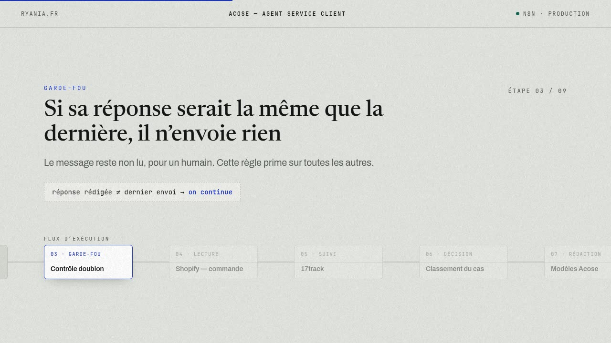

L’agent qui répond au service client, sans relecture
Il lit l’e-mail, retrouve la commande, interroge le transporteur, écrit la réponse dans le ton de la marque et l’envoie. Puis il archive le fil.

- Déclencheur
- Nouvel e-mail Gmail
- Fréquence
- À chaque message, 24 h/24
- Périmètre
- Suivi, annulation, remboursement, adresse, quantité, colis perdu
- Outils de l’agent
- 9 outils, dont 2 sous-workflows
- Écriture
- Réponse HTML, modèles maison, signature fixe
- Statut
- En production depuis juin
Une boutique qui vend en France reçoit tous les jours la même question : « où est mon colis ? ». Y répondre correctement demande d’ouvrir la boîte mail, retrouver la commande dans Shopify, aller lire le suivi chez le transporteur, puis réécrire à la main une réponse qu’on a déjà écrite cent fois.
L’agent fait exactement ce parcours. Il retrouve la commande, enregistre le numéro de suivi auprès du transporteur, attend le retour, lit le statut réel, choisit le bon scénario parmi une dizaine, rédige avec les modèles de la marque et envoie. Le tout en 13 secondes pour un cas simple, deux minutes trente quand il doit interroger le transporteur.
Il ne se contente pas du suivi : il annule une commande, rembourse, change une adresse de livraison, modifie une quantité en cours de commande, ou traite un colis livré mais jamais reçu.
Un agent qui écrit à des clients à votre place peut faire deux dégâts : répondre deux fois la même chose, et répondre là où il fallait se taire.
Avant chaque envoi, il relit les six derniers échanges avec ce client sur trente jours, dans les deux sens, corbeille comprise. Si sa réponse dit la même chose que la précédente — même si une date a changé — il n’envoie rien et laisse le message non lu.
Et sur un litige, une menace, un chargeback, ou simplement un cas dont il n’est pas certain : aucune action. Ni réponse, ni archivage, ni marquage comme lu. Cette règle prime sur toutes les autres.